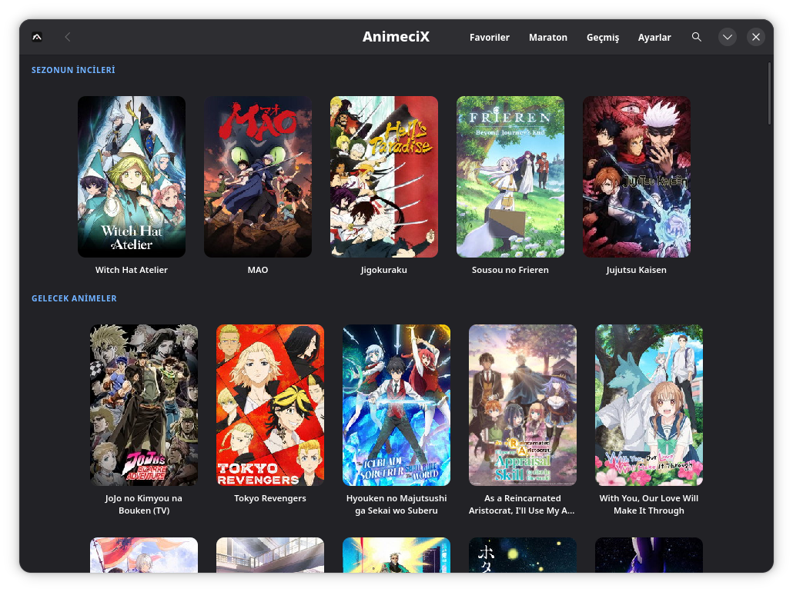
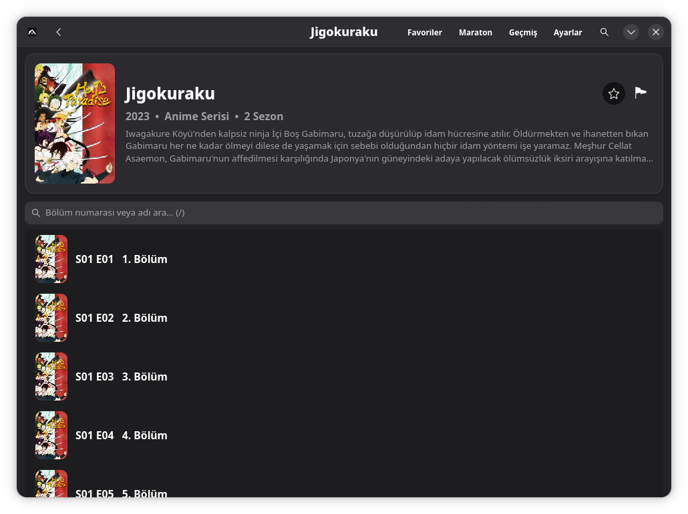
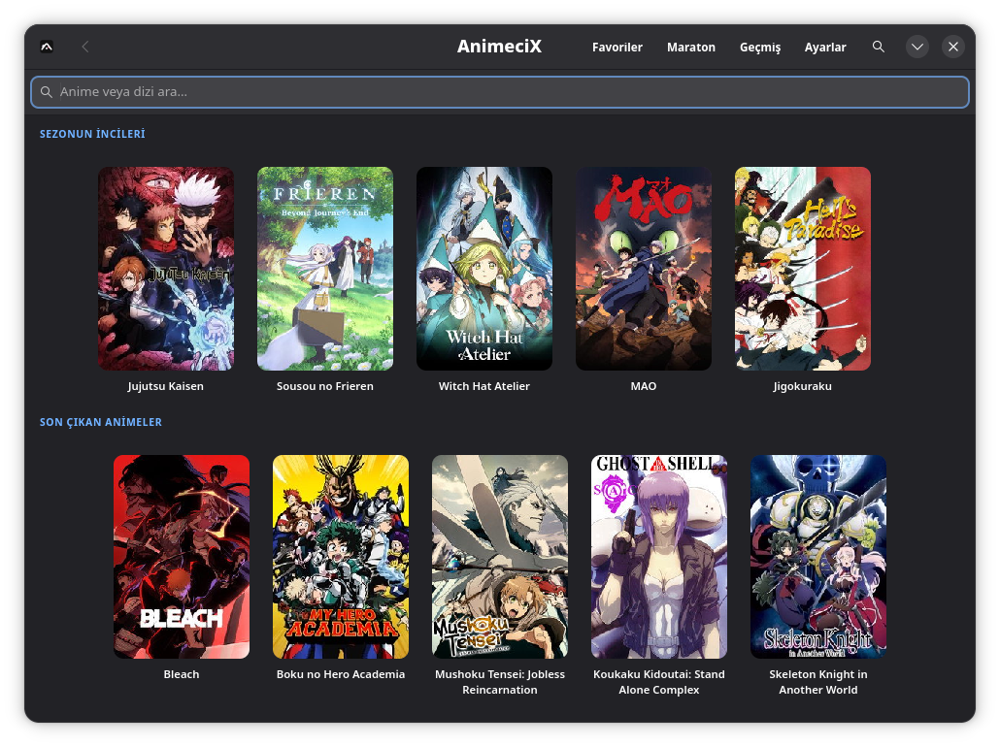
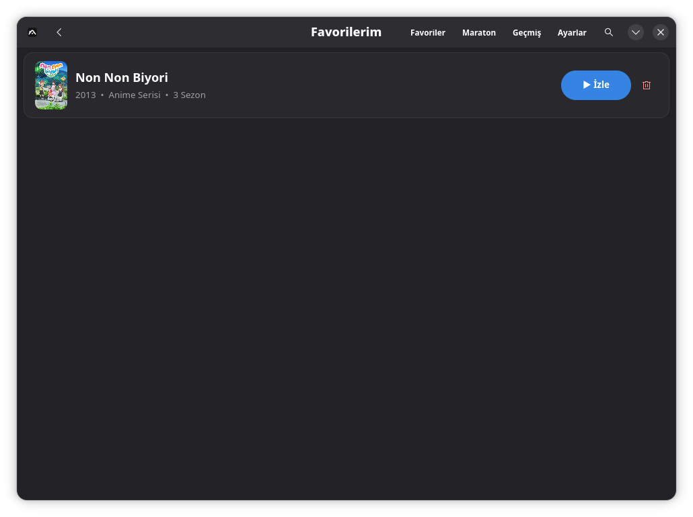
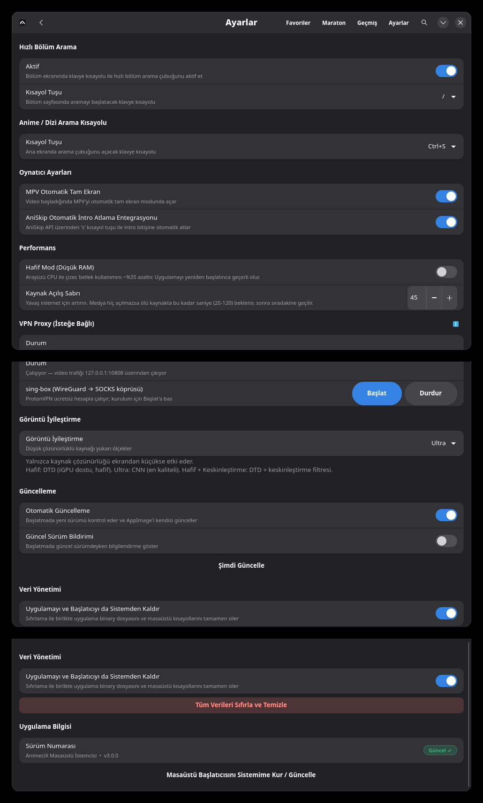

Ana sayfa
Kategorilere göre anime, dizi ve film listeleri. Yatay raflar, poster büyük, tanıtım metni küçük. Tıklayınca detay sayfası.
Linux için anime, dizi ve film masaüstü istemcisi. GTK4/libadwaita ile yazıldı, AppImage olarak dağıtılır.
Özellikler

Kategorilere göre anime, dizi ve film listeleri. Yatay raflar, poster büyük, tanıtım metni küçük. Tıklayınca detay sayfası.

MPV tabanlı oynatıcı. AniSkip intro ve outro'ları otomatik atlar. Anime4K shader'larıyla görüntü kalitesi artırılır (Hafif, Ultra, Keskinleştirme). 2 dakikalık önbellek, otomatik tam ekran.

/ tuşuyla ana sayfadan, Ctrl+S ile bölüm ekranından arama. Tüm kaynaklar paralel çözülür, en kalitelisi (boyuta göre) seçilir. Ölü kaynaklar elenir, başarısız olursa sonraki denenir.

Favorilere ekle. Maraton listesinde sürükle-bırak ile sırala, bölüm ilerlemesini takip et. İzlenen bölümler Geçmiş'e otomatik düşer.

Masaüstü başlatıcı entegrasyonu, kısayollar, veri sıfırlama. 127.0.0.1:10808'de bir SOCKS5 proxy (ör. sing-box + ProtonVPN) varsa video trafiği oradan geçer. ISS kısıtlamalarını aşar. Proxy yoksa uygulama normal çalışır.
Kurulum
Tek dosya, taşınabilir, kurulum gerektirmez.
wget https://github.com/nyx47rd/animecix/releases/latest/download/AnimeciX-x86_64.AppImage
chmod +x AnimeciX-x86_64.AppImage
./AnimeciX-x86_64.AppImageFlathub'da yayında.
flatpak install flathub io.github.nyx47rd.AnimeciX
flatpak run io.github.nyx47rd.AnimeciXsudo dnf install gtk4 libadwaita mpv webkit2gtk4.1
sudo apt install libgtk-4-1 libadwaita-1-0 mpv
sudo pacman -S gtk4 libadwaita mpv
Uygulama her başlatmada yeni sürümü kontrol eder. AppImage sürümü kendini otomatik güncelleyebilir.
SSS